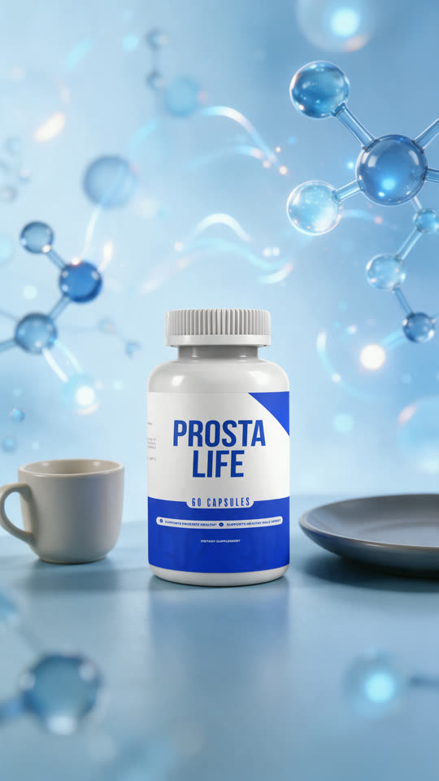
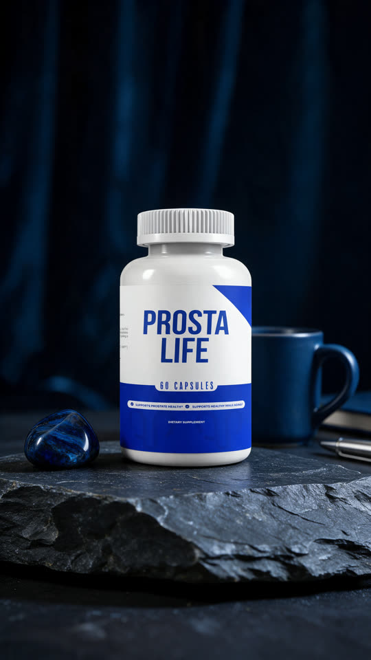
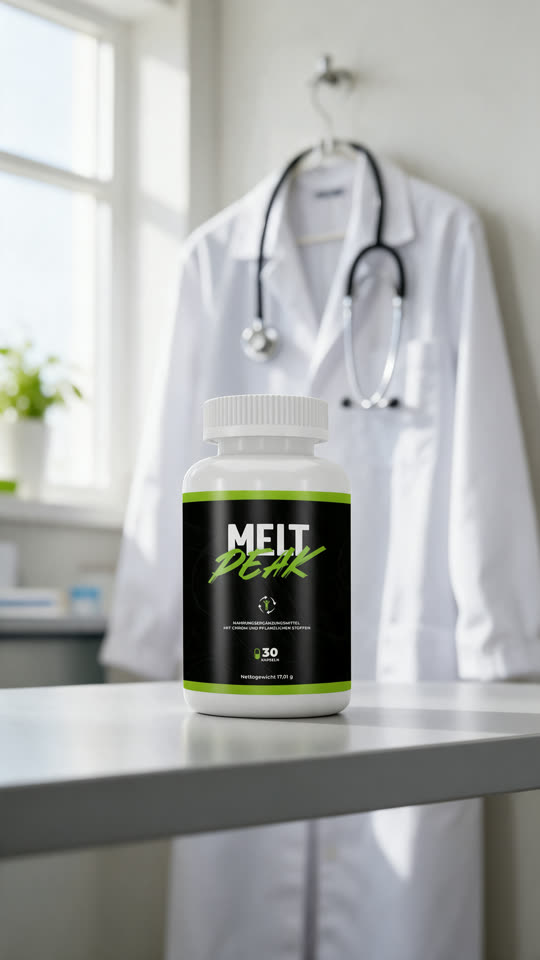
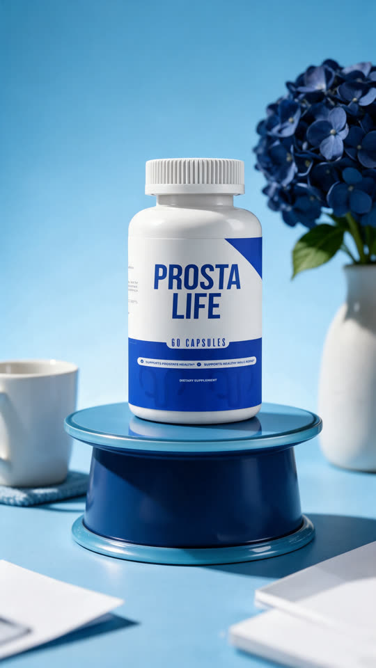
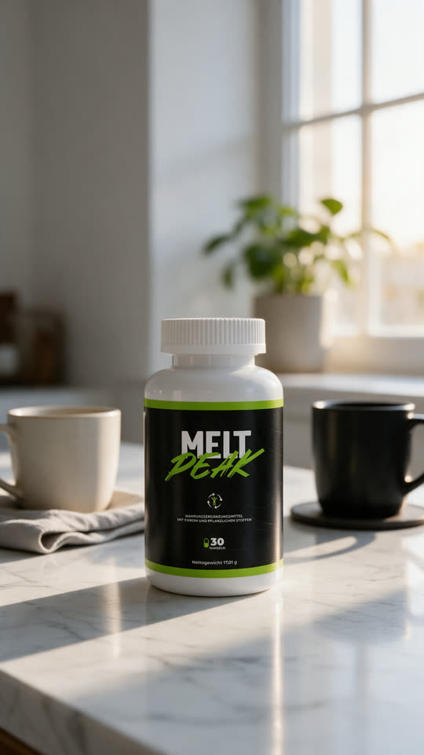
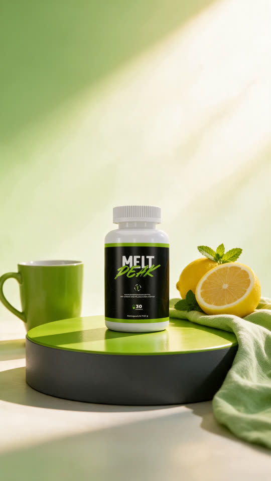
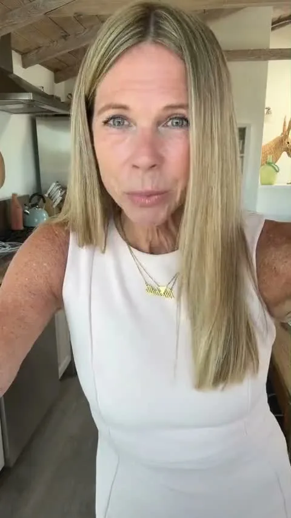

App para Windows · feito pra quem vive de VSL e criativo
Uma foto vira o rosto da sua VSL. E ele não para de falar.
Solte a imagem, aprove o take e receba o apresentador falando na duração que a sua VSL pede, sem emenda à vista. No mesmo app: presell, produto em cena e criativo no formato certo.
- Você aprova antes de gastar
- Custo na tela antes do clique
- Roda na sua conta Magnific
Windows 10 ou 11 (64 bits) · internet · conta Magnific com créditos
- 1Uma foto
- 2Um apresentador
- 3Sem fim à vista
- Fundo de VSL
- Rosto de especialista
- Criativo estilo UGC
- Presell em minutos
- Advertorial em qualquer idioma
- Pote em cena, sem estúdio
- B-roll de 5 s
- 9:16 · 4:5 · 16:9
- Sem legenda queimada
- Você aprova antes de gastar
- Custo antes do clique
- Fila de criativos
- Retoma de onde parou
Desafio
Ache a emenda.
Este vídeo está em loop agora. Toque quando ele voltar ao começo.
voltas: 0 · falando há 00:00:00
Vídeo real gerado pelo LoopVideo, sem edição depois.
Rodando agora
Qualquer rosto que a sua oferta pedir.
Dez vídeos reais saídos do app, em loop. Todos personagens de IA, todos sem áudio: o fundo da sua narração.
Quero o meu rosto de VSL
Exemplos gerados com o LoopVideo a partir de personagens criados por IA. O resultado varia com a imagem usada.
O problema
A VSL tem minutos. O vídeo de IA tem segundos.
Quem edita VSL conhece o resto. Ou você grava com alguém, ou junta trechos de IA na timeline até fechar o tempo e torce pra ninguém notar o pulo. E o criativo que vendeu ontem cansa na semana que vem.
- Ator ou especialista pra agendar, gravar e pagar
- Vídeo de IA que acaba antes do lead
- Pulo visível bem no meio da história
- Crédito gasto num take que você nem aprovou
- Presell, mockup e formato espalhados em cinco ferramentas
O LoopVideo cuida do fundo. Você cuida da copy.
Entrou uma foto. Saiu o especialista.
A imagem que entrou e o vídeo que saiu do app. Arraste e compare.
Exemplo gerado com o LoopVideo a partir de personagem criado por IA. O resultado varia com a imagem e com a IA escolhida.
 A foto
O vídeo
A foto
O vídeo
Já tem um take bom? O app só fecha o loop.
Solte o seu vídeo no lugar da foto. Ele vira um loop sem emenda à vista, por menos da metade do custo.
cerca de 325 créditos em vez de 775
Do anúncio à página
Quatro ferramentas. O funil inteiro.
Em Direct Response, cada etapa pede uma peça diferente. O LoopVideo faz as quatro, e o resultado de uma vira a entrada da próxima.
-
1
Anúncio
Volume. Hook novo, ângulo novo, formato certo pra cada posicionamento.
Mockup (vídeos de 5 s) · Imagens (9:16, 4:5, 16:9) · Vídeos (rosto falando)
-
2
Presell / advertorial
Cara de matéria, não de anúncio.
Prova visual
-
3
VSL
Um rosto do começo ao fim, b-roll e prova na tela.
Vídeos · Mockup · Prova visual
-
4
Página de vendas
Produto em cena e imagens limpas.
Mockup · Imagens
Teste mais ângulos sem abrir mais abas.
Prova visual · para presell, advertorial e VSL
A matéria que vem antes da VSL.
Cole a copy ou uma matéria real e saia com uma página de portal, revista ou blog. Sem designer, no idioma da oferta.
- Presell com cara de editorial. Portal, revista, jornal, blog, infográfico, newsletter, passo a passo.
- Qualquer idioma. O texto entra em português e a página sai em inglês, alemão, espanhol… Pronta pra escalar em outro país.
- Prova de mídia de verdade. Resuma uma matéria publicada e mostre na VSL, com o nome do veículo e o link no rodapé.
- Sem fonte, não entra. Estudo, número ou especialista só aparecem com fonte real. Se a copy citar sem fonte, o app recusa antes de gastar. Menos risco pra conta de anúncio.
- Advertorial sinalizado. No modo da marca, a página leva a etiqueta de publicidade do idioma.
A prova que segura o lead, pronta em minutos.
Quero fazer minhas presellsMockup · produto em cena
Seu pote em cena. Sem estúdio, sem fotógrafo.
Suba a foto do frasco e escolha o nicho. Saem cenas do produto prontas pra criativo, VSL e página. As melhores viram vídeos de 5 s.

- 5 s


- 5 s


- 5 s

- Cenas por nicho. Produto sozinho, com pessoa ou em ambiente de fábrica. Idade e sexo da pessoa já vêm do nicho.
- Cores do seu pote. A paleta da cena sai do rótulo, pra tudo parecer da mesma marca.
- Sem texto no fundo. A mesma imagem serve pra qualquer país.
- De imagem a vídeo. Marque as melhores e elas viram vídeos de 5 s, com movimento suave e o rótulo parado. B-roll pra VSL ou abertura de criativo.
- Sempre cena nova. Pediu mais? Saem variações da mesma cena, cada uma diferente.
Um ângulo novo por dia sem marcar sessão de foto.
Quero meu produto em cenaImagens · o criativo no formato certo
Cada posicionamento no formato certo.
Pegue a imagem que você já tem e deixe pronta pro feed, pros Stories e pro YouTube. Sem refazer do zero.

Com legenda Limpa- Muda o formato. 9:16, 4:5, 16:9 e outros. A IA preenche o que falta, sem esticar.
- Tira legenda e marca d'água. Das suas peças, prints e exportações antigas, mantendo o resto igual.
- Melhora a qualidade. Mais detalhe, mais nitidez ou só a pele.
- Antes e depois ilustrativo. Para VSL e página, em ambientes diferentes.
- Encadeia. Limpa, muda o formato e melhora numa sequência só.
Um criativo vencedor vira três posicionamentos.
Use só imagens que são suas ou que você tem direito de usar. Antes e depois tem regra própria em cada plataforma de anúncio: confira antes de subir.
- 1 fotoé o que entra
- 0 pulosà vista, do começo ao fim
- 1 aprovaçãoantes de gastar o resto
- 4 ferramentasdo anúncio à página
A mesma VSL, dois caminhos.
Sem o LoopVideo
- Especialista pra agendar e gravar
- Trechos de IA colados na timeline
- Pulo que o público nota
- Crédito gasto antes de ver o take
- Presell com designer, foto com estúdio
 Com o LoopVideo
Com o LoopVideo
- Uma foto e um clique
- Um rosto do começo ao fim
- Sem emenda à vista
- Você aprova antes de gastar o resto
- Presell, mockup e formato no mesmo app
Pra quem vive de criativo.
Editor de VSL
Entrega o fundo da VSL no mesmo dia, sem esperar gravação.
Gestor de tráfego
Sobe criativo novo antes do atual cansar. Mais rostos, mais formatos, mais ângulos.
Copywriter
Testa a copy com rosto, presell e prova sem depender de ninguém.
Produtor e infoprodutor
Monta o funil de uma oferta nova sem montar uma equipe junto.
Agência e operação
Fila de criativos rodando enquanto o time cuida do resto. Ver plano Empresarial.
Roda enquanto você edita.
Fila
Solte várias imagens. Ele gera uma depois da outra.
Retoma sozinho
Fechou no meio? Continua de onde parou, sem cobrar de novo.
Custo antes
Cada botão mostra os créditos antes do clique.
Perto do relógio
Minimiza e segue gerando. O PC continua seu.
Avisos do Windows
Pronto, erro ou esperando aprovação: o Windows te chama.
Atualiza num clique
Versão nova aparece no app. Um clique e pronto.
Transparência
Você paga a IA direto na fonte.
A IA roda na sua conta Magnific, com o seu login. Os créditos saem de lá, sem margem nossa no meio. O app mostra o custo antes de cada clique.
- Vídeo a partir de uma foto
- cerca de 775 créditos
- Loop a partir de um vídeo seu
- cerca de 325 créditos
- Refazer um take antes de aprovar
- cerca de 450 créditos
O custo não muda com a duração do vídeo. [CONFIRMAR]
Valores com as opções padrão. Outra IA ou 4K pode custar mais, e o app mostra a diferença antes de você gerar. Imagens, Prova visual e Mockup mostram o custo em cada botão.
Planos
Escolha como você trabalha.
Individual · [PLANO: mensal ou vitalício]
Pra editor, copywriter ou gestor que cria sozinho.
- Vídeos em loop a partir de uma foto, na duração que você escolher
- Loop a partir de um vídeo seu, por menos da metade do custo
- Você aprova o take antes de gastar o resto
- Prova visual: presell e advertorial em qualquer idioma
- Mockup: produto em cena e vídeos de 5 s
- Imagens: formato, limpeza, qualidade e antes e depois
- Fila, retomada e avisos do Windows
- Atualizações num clique · ativação em [QTD_PCS] PC(s)
de [PREÇO_ANCORA]
por [PREÇO]
ou [PARCELAS]
Pagamento pela [PLATAFORMA_PAGAMENTO]. O código de ativação chega no seu e-mail.
Empresarial
Pra agências, operações e times de Direct Response.
Montado pro tamanho da sua operação.
- Tudo do Individual
- Mais máquinas, na quantidade que o time precisa [CONFIRMAR]
- Liberação das máquinas centralizada pelo seu time [CONFIRMAR]
- Onboarding da equipe [CONFIRMAR]
- Suporte prioritário [CONFIRMAR]
- Ajustes pro fluxo da operação, como prompts padrão por nicho [CONFIRMAR]
Sob consulta
Conte quantas pessoas e quantas ofertas rodam aí. A gente monta a proposta.
Windows 10 ou 11 (64 bits) · internet · conta Magnific com créditos (cobrados à parte, pela Magnific)
[DIAS_GARANTIA] dias pra testar.
Instale, gere seus vídeos e use as outras ferramentas. Não serviu pro seu trabalho? Peça o reembolso em até [DIAS_GARANTIA] dias pela [PLATAFORMA_PAGAMENTO] ou pelo [EMAIL_SUPORTE]. Os créditos gastos na Magnific são da sua conta lá e não entram no reembolso.
Vale pro plano Individual. No Empresarial, as condições entram na proposta. [CONFIRMAR]
Perguntas frequentes
Qual a duração do vídeo?
Você escolhe no app. O padrão é 2:30, e hoje dá pra ir de [DURAÇÃO_MIN] a [DURAÇÃO_MAX]. [CONFIRMAR]
Dá pra perceber que é loop?
O app foi feito pra a volta ao começo não aparecer, e você confere antes do vídeo final. O resultado varia com a imagem: por isso você aprova o take antes de gastar o resto.
O vídeo sai com voz?
Não. Sai sem áudio: é o apresentador falando como fundo, pra você pôr a narração da VSL por cima.
Posso usar em anúncio?
Pode, com responsabilidade. Use só imagens que são suas ou que você tem direito de usar. Não use pra imitar uma pessoa real ou famosa, se passar por um profissional real ou inventar depoimento de cliente. Siga as regras da plataforma onde vai anunciar, inclusive a sinalização de conteúdo feito com IA quando ela for exigida.
Funciona com qualquer foto?
Aceita PNG, JPG ou WebP de até 25 MB. Você escolhe Homem ou Mulher e o app cuida do resto.
Quanto custa a IA?
Os créditos são da Magnific, na sua conta. Cerca de 775 por vídeo a partir de foto e 325 a partir de um vídeo seu. Cada botão mostra o custo antes do clique.
Preciso de conta na Magnific?
Sim, com créditos. Você conecta pelo login no navegador. Todas as ferramentas usam essa conta.
Preciso de placa de vídeo boa?
Não. A IA roda na nuvem, pela sua conta Magnific. O PC só finaliza o vídeo, um por vez, e você continua usando o computador.
Funciona no Mac?
Não. É um app para Windows 10 ou 11, 64 bits.
Qual a diferença entre Individual e Empresarial?
O Individual é pra quem cria sozinho, com preço fechado e ativação em [QTD_PCS] PC(s). O Empresarial é pra time: mais máquinas, onboarding e suporte prioritário, montado sob medida. Fale com a gente pelo [LINK_CONTATO].
Em quantos computadores posso usar?
O Individual ativa [QTD_PCS] PC(s). Vai trocar de computador? Fale com o [EMAIL_SUPORTE] e liberamos a troca. Precisa de mais máquinas? Veja o Empresarial.
É assinatura?
O Individual é [PLANO: mensal ou vitalício]. [Se mensal: renova a cada 30 dias e você cancela quando quiser.] [Se vitalício: paga uma vez e usa sem mensalidade.] Os créditos da Magnific são cobrados à parte, por ela.
Como eu recebo?
Depois do pagamento, chega no seu e-mail o link de download e o código de ativação. Instala, digita o código e o app libera na hora.
E se eu não gostar?
Você tem [DIAS_GARANTIA] dias de garantia. Peça o reembolso pela [PLATAFORMA_PAGAMENTO] ou pelo [EMAIL_SUPORTE].
O Windows mostrou um aviso ao instalar. É normal?
É. Na primeira vez o Windows pode avisar "aplicativo desconhecido". Clique em Mais informações e depois em Executar assim mesmo. Não pede senha de administrador.

O próximo criativo começa com uma foto.
O rosto da VSL, a presell e o produto em cena. Tudo no mesmo app.
- Garantia de [DIAS_GARANTIA] dias
- Ativação na hora
- Custo sempre visível